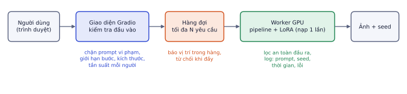
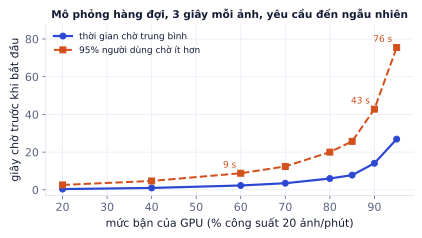

Giai đoạn P5 · Dự án Diffusion: tạo ảnh từ con số 0Tuần 10–30Có nội dung đầy đủ
Giai đoạn cuối của dự án: biến mọi thứ đã làm thành một sản phẩm người khác mở link là dùng được, và một README khiến nhà tuyển dụng hiểu bạn đã làm gì trong 2 phút. Đây là phiên bản làm lại của đồ án tạo ảnh, nhưng lần này chạy model và LoRA của chính bạn, có số đo chất lượng thật. Bài này đi qua kiến trúc app, hàng đợi (có mô phỏng thời gian chờ), chi phí, deploy, an toàn và cách viết README.
Kiến trúc một app tạo ảnh
Vì sao cần học
Nhà tuyển dụng và khách hàng freelance hiếm khi chạy notebook của bạn. Họ mở link. Một app chạy được, có giới hạn hợp lý và README rõ ràng cho thấy bạn làm được sản phẩm, không chỉ thí nghiệm, và đó là điều phân biệt "AI Engineer" với "người học AI".

Bốn khối của một app tạo ảnh. Mỗi khối có một việc kiểm soát riêng.
Khối
Việc chính
Vì sao
Giao diện
nhận prompt và tham số, kiểm tra hợp lệ
chặn yêu cầu vô lý trước khi tốn GPU
Hàng đợi
xếp thứ tự, báo vị trí, từ chối khi đầy
GPU chỉ sinh hiệu quả một hoặc vài ảnh cùng lúc
Worker GPU
chạy pipeline + LoRA đã nạp sẵn
nạp model mất hàng chục giây, chỉ làm một lần
Log
ghi prompt, seed, thời gian sinh, lỗi
tái tạo ảnh khi người dùng phàn nàn, tìm điểm nghẽn
Lỗi hay gặp
Nạp model bên trong hàm xử lý. Viết pipe = StableDiffusionPipeline.from_pretrained(...) trong hàm generate() thì mỗi yêu cầu mất thêm 10–30 giây và bộ nhớ GPU tăng dần tới tràn. Nạp một lần ở cấp module (khi app khởi động), hàm xử lý chỉ dùng lại.
Hàng đợi và thời gian chờ
Một GPU sinh tuần tự. Nếu mỗi ảnh mất S giây, công suất tối đa là 3600 / S ảnh mỗi giờ.
Ví dụ từng bước
Mỗi ảnh 3 giây, 6 người bấm "Sinh" cùng lúc:
Người đầu nhận ảnh sau 3 giây.
Người thứ 6 chờ 5 × 3 = 15 giây mới bắt đầu, nhận ảnh sau 18 giây.
Điều không hiển nhiên: thời gian chờ không tăng đều theo số người dùng. Khi yêu cầu đến ngẫu nhiên (đúng với người dùng thật), có lúc nhiều yêu cầu dồn một chỗ, và thời gian chờ bùng nổ khi GPU gần hết công suất.

Mô phỏng 40.000 yêu cầu đến ngẫu nhiên, mỗi ảnh 3 giây. Bận 60%: chờ trung bình 2,3 giây, 95% người chờ dưới 9 giây. Bận 90%: trung bình 14 giây, 95% dưới 43 giây. Bận 95%: 95% dưới 76 giây.
Quy tắc thực tế: giữ GPU bận dưới khoảng 70% vào giờ cao điểm. Muốn chạy gần 100% công suất mà vẫn nhanh thì phải giảm thời gian mỗi ảnh (ít bước hơn, sampler nhanh hơn, model chưng cất) hoặc thêm GPU.
Đào sâu thêm
Công thức hàng đợi. Với yêu cầu đến ngẫu nhiên (Poisson) và thời gian phục vụ cố định S, thời gian chờ trung bình là W = ρ·S / (2·(1 − ρ)), với ρ là mức bận (mô hình M/D/1). Với S = 3 giây: ρ = 0.6 cho W = 2,25 giây; ρ = 0.9 cho W = 13,5 giây. Mô phỏng ở trên cho 2,3 và 14,1, khớp lý thuyết. Mẫu số (1 − ρ) là lý do đường cong dựng đứng khi ρ tiến tới 1.
Giới hạn để bảo vệ hàng đợi
Độ dài hàng đợi tối đa: khi đầy, từ chối lịch sự ("Đang nhiều người dùng, thử lại sau 1 phút") tốt hơn để người dùng chờ 5 phút rồi lỗi timeout.
Một yêu cầu đang chờ mỗi người: chặn một người bấm 20 lần chiếm hết hàng.
Giới hạn tham số: số bước, kích thước ảnh, số ảnh mỗi lần. Một yêu cầu 100 bước ở 1024×1024 có thể tốn bằng 15 yêu cầu bình thường.
Chi phí mỗi ảnh
GPU thuê theo giờ tính tiền cả khi rảnh. Chi phí mỗi ảnh = giá GPU mỗi giờ / số ảnh thực sự sinh được mỗi giờ.
GPU bận 25% thì mỗi ảnh đắt gấp 4. Với app portfolio ít người dùng, chọn dịch vụ tắt GPU khi không có yêu cầu (Hugging Face ZeroGPU, serverless GPU tính theo giây) thay vì thuê máy chạy cả ngày.
Mâu thuẫn cần cân bằng: bận cao thì rẻ nhưng chờ lâu (hình hàng đợi), bận thấp thì nhanh nhưng đắt. Đây là câu hỏi khách hàng sẽ hỏi, và giờ bạn trả lời được bằng số.
Gradio
Gradio dựng giao diện web cho hàm Python trong vài chục dòng: ô nhập, thanh trượt, ảnh đầu ra, ví dụ mẫu, hàng đợi tích hợp.
importgradioasgrdefgenerate(prompt,steps,seed):# gọi pipeline đã nạp sẵn ở cấp module; trả về ảnh PILreturnpipe(prompt,num_inference_steps=int(steps),generator=torch.Generator("cuda").manual_seed(int(seed))).images[0]demo=gr.Interface(fn=generate,inputs=[gr.Textbox(label="Mô tả"),gr.Slider(10,40,value=25,step=1,label="Số bước"),gr.Number(value=0,label="Seed")],outputs=gr.Image(label="Ảnh"))demo.queue(max_size=20).launch()
gr.Interface đủ cho demo một hàm. Bài tập code dùng gr.Blocks để bố trí tự do hơn (nhiều cột, nút, ví dụ mẫu).
queue(max_size=20) bật hàng đợi có giới hạn; người dùng thấy vị trí của mình trong hàng.
launch(share=True) tạo link công khai tạm thời (hữu ích trên Colab).
Gradio phù hợp để demo và công cụ nội bộ. Khi cần sản phẩm thật với nhiều người dùng, đăng nhập, thanh toán, tách thành API (FastAPI, P8.1) và frontend riêng.
Deploy
Cách
Ưu
Nhược
Hugging Face Spaces có GPU
link công khai cố định, dễ nhất cho portfolio
GPU trả phí theo giờ (hoặc ZeroGPU nếu tài khoản đủ điều kiện)
Colab + share=True
miễn phí, nhanh để demo
link tạm thời, tắt khi phiên kết thúc
VPS/cloud GPU + Docker
toàn quyền
tự lo bảo trì, bảo mật, chi phí
Với portfolio: Space có GPU cho buổi demo, còn README luôn có ảnh kết quả và video ngắn để người xem hiểu được kể cả khi Space đang tắt. Đẩy LoRA lên Hugging Face Hub kèm model card: model nền, dữ liệu train (nguồn, quyền dùng), từ kích hoạt, độ mạnh khuyên dùng, ví dụ ảnh, hạn chế.
An toàn và giấy phép
Giấy phép model: SD 1.5 dùng giấy phép CreativeML OpenRAIL-M, cho phép dùng thương mại nhưng có danh sách cách dùng bị cấm. Mỗi model nền và mỗi LoRA có giấy phép riêng; đọc trước khi dùng cho khách.
Lọc đầu vào: chặn prompt rõ ràng vi phạm chính sách (danh sách từ khóa + phân loại bằng model nhỏ, như guardrails ở P4.8).
Lọc đầu ra: bộ lọc an toàn trên ảnh sinh ra; ảnh bị chặn thì trả thông báo, không trả ảnh.
Không tạo ảnh người thật khi không có sự đồng ý, không bắt chước logo hay thương hiệu.
Ghi rõ trong README: model nền, dữ liệu LoRA (của bạn, có quyền dùng), giới hạn đã biết.
Lỗi hay gặp
Log prompt mà không nghĩ tới quyền riêng tư. Prompt có thể chứa tên người, mô tả nhạy cảm. Log để gỡ lỗi là cần, nhưng ghi rõ trong trang app rằng prompt được lưu, giới hạn thời gian lưu, và không đẩy log lên repo công khai.
README cho CV
Người đọc README là nhà tuyển dụng có 2 phút. Cấu trúc:
Một câu: app làm gì, khác gì.
Ảnh/GIF demo ngay đầu trang và link demo.
Kết quả đo được: bảng CLIP score, KID, tỉ lệ thắng khảo sát, thời gian sinh (từ GĐ6).
Kỹ thuật: sơ đồ kiến trúc, những gì bạn tự viết (DDPM từ đầu, vòng lặp sampling, LoRA).
Cách chạy: vài lệnh.
Hạn chế và việc tiếp theo: trung thực, cho thấy bạn hiểu giới hạn.
Ví dụ từng bước
So hai câu mở đầu README:
Yếu
Tốt
"Dự án tạo ảnh sử dụng AI và Stable Diffusion với nhiều tính năng."
"Sinh ảnh sản phẩm nội thất nền trắng theo phong cách thống nhất của một shop, từ mô tả tiếng Anh. LoRA tự train trên 25 ảnh; người chấm chọn bản LoRA 64% số lần so với model gốc."
Câu tốt nói rõ ai dùng, làm gì, đo được gì. Câu yếu đúng với hàng nghìn repo khác. (Số liệu trong ví dụ là minh họa; dùng số đo thật của bạn.)
Ghi nhớ: dự án portfolio được đánh giá qua README và demo, không phải qua số dòng code. Một app nhỏ chạy được, có số đo, hơn một hệ thống lớn không ai chạy thử được.
Tự kiểm tra nhanh
Mỗi ảnh mất 3 giây trên một GPU.
Tóm tắt bài và thuật ngữ
Chủ đề
Ý chính
Kiến trúc
giao diện kiểm tra → hàng đợi → worker GPU nạp model một lần → log
Hàng đợi
chờ bùng nổ khi bận gần 100%; giữ dưới khoảng 70% giờ cao điểm
Chi phí
giá giờ / số ảnh thực sinh; GPU rảnh vẫn tốn tiền
Gradio
Interface cho demo nhanh, Blocks cho bố cục; queue(max_size)
Deploy
Space có GPU cho demo, video và ảnh trong README cho lúc Space tắt
An toàn
giấy phép model, lọc vào/ra, không người thật, model card
README
một câu, demo, số đo, phần tự viết, cách chạy, hạn chế
Thuật ngữ
Nghĩa
worker
tiến trình chạy model xử lý yêu cầu
queue
hàng đợi yêu cầu
throughput
thông lượng, số ảnh mỗi đơn vị thời gian
latency
độ trễ, thời gian từ lúc gửi tới lúc nhận
utilization (ρ)
mức bận của GPU
p95
95% yêu cầu nhanh hơn mức này
Hugging Face Space
dịch vụ host demo của Hugging Face
model card
tài liệu mô tả model, dữ liệu, cách dùng, hạn chế
OpenRAIL-M
loại giấy phép model có danh sách cách dùng bị cấm
Ô tự chấm đã giải đúng0 / 2
Bài 1
Hàng đợi
tính tay
Mỗi ảnh mất 4 giây, có 1 GPU xử lý tuần tự, 10 người gửi yêu cầu cùng lúc.
Lời giải
Người thứ 10 chờ 9 × 4 = 36 giây, nhận ảnh sau 40 giây. Một GPU sinh tối đa 900 ảnh/giờ. Giảm thời gian chờ: ít bước hơn, sampler nhanh hơn, batch nhiều yêu cầu, hoặc thêm GPU.
Bài 2
Chi phí mỗi ảnh
tính tay
Giả sử thuê GPU giá ví dụ 0.6 USD/giờ, mỗi ảnh 4 giây, GPU bận 50% thời gian.
Lời giải
900 ảnh/giờ → 0.6/900 ≈ 0.00067 USD mỗi ảnh. Bận 50% thì chỉ 450 ảnh/giờ, chi phí gấp đôi. GPU nhàn rỗi vẫn tính tiền, nên app ít người dùng nên tắt khi không dùng hoặc dùng dịch vụ tính theo lượt.
Bài 3
Giới hạn đầu vào
thiết kế
Liệt kê các giới hạn bạn đặt cho app (bước, kích thước, prompt, tần suất…) kèm giá trị và lý do.
Lời giải
Số bước 10–40 (trên 40 gần như không cải thiện, tốn GPU). Kích thước 512×512 cố định (đúng kích thước train của SD 1.5). Prompt tối đa 300 ký tự (CLIP chỉ đọc 75 token). Guidance 1–12. Seed là số nguyên, có nút ngẫu nhiên. Tối đa 1 yêu cầu đang chờ mỗi người dùng, hàng đợi tối đa 20. Lọc prompt chứa từ khóa vi phạm chính sách.
Bài 4
Viết đoạn mở đầu README
khái niệm
Viết 4–6 dòng đầu README cho app của bạn: câu giới thiệu, link demo, và một bảng kết quả rút gọn (dùng số đo thật của bạn từ GĐ6).
Lời giải
Mẫu (thay số của bạn):
# Tạo ảnh sản phẩm nội thất bằng diffusion + LoRA
Sinh ảnh sản phẩm nền trắng phong cách thống nhất từ mô tả tiếng Anh. LoRA tự train trên 20 ảnh, chạy trên Stable Diffusion 1.5.
**Demo:** <link Space> · **Video 2 phút:** <link>
| | CLIP score | Tỉ lệ thắng (10 người) | Thời gian/ảnh (T4) |
|---|---|---|---|
| SD 1.5 gốc | … | … | … s |
| + LoRA của tôi | … | … | … s |
Bài 5
App Gradio
code
Viết app Gradio: ô prompt, negative prompt, thanh trượt số bước (10–40), guidance (1–12), độ mạnh LoRA (0–1), ô seed, nút sinh, ảnh đầu ra, 3 ví dụ mẫu, hàng đợi tối đa 20.
Code tham khảo
importgradioasgr,torchfromdiffusersimportStableDiffusionPipeline,DPMSolverMultistepSchedulerpipe=StableDiffusionPipeline.from_pretrained("stable-diffusion-v1-5/stable-diffusion-v1-5",torch_dtype=torch.float16).to("cuda")pipe.scheduler=DPMSolverMultistepScheduler.from_config(pipe.scheduler.config)pipe.load_lora_weights("lora-tthstyle")defgenerate(prompt,negative,steps,guidance,lora_scale,seed):ifnotprompt.strip():raisegr.Error("Hãy nhập mô tả ảnh.")g=torch.Generator("cuda").manual_seed(int(seed))returnpipe(prompt[:300],negative_prompt=negative[:300],num_inference_steps=int(steps),guidance_scale=guidance,generator=g,cross_attention_kwargs={"scale":lora_scale}).images[0]withgr.Blocks(title="Tạo ảnh sản phẩm nội thất")asdemo:gr.Markdown("## Tạo ảnh sản phẩm nội thất\nStable Diffusion 1.5 + LoRA phong cách ảnh sản phẩm.")withgr.Row():withgr.Column():prompt=gr.Textbox(label="Mô tả (tiếng Anh)",lines=2)negative=gr.Textbox(label="Không muốn có",value="blurry, text, watermark")steps=gr.Slider(10,40,value=25,step=1,label="Số bước")guidance=gr.Slider(1,12,value=7,step=0.5,label="Guidance")lora_scale=gr.Slider(0,1,value=0.8,step=0.05,label="Độ mạnh phong cách")seed=gr.Number(value=42,precision=0,label="Seed")btn=gr.Button("Tạo ảnh",variant="primary")out=gr.Image(label="Kết quả")gr.Examples([["a vanity table with round mirror, tthstyle product photo"],["a rattan armchair, tthstyle product photo"],["a ceramic table lamp, tthstyle product photo"]],inputs=[prompt])btn.click(generate,[prompt,negative,steps,guidance,lora_scale,seed],out)demo.queue(max_size=20).launch()
Sản phẩm hoàn chỉnh cho CV
Các bước
Gộp code các giai đoạn vào một repo: gd1-ddpm-2d/, gd2-fashion-ddpm/, gd3-cfg/, gd4-sd-loop/, gd5-lora/, gd6-eval/, app/.
App Gradio như bài tập 5, thêm log mỗi yêu cầu (thời gian, prompt, seed, thời gian sinh) ra file.
Deploy: Hugging Face Space có GPU (hoặc Colab share=True cho buổi demo), đẩy LoRA lên Hub kèm model card.
Quay video 2 phút: giới thiệu, demo tạo 3 ảnh, giải thích một phần bạn tự viết.
README theo cấu trúc trong bài, có bảng số đo từ GĐ6, sơ đồ kiến trúc, mục "Hạn chế".
Nhờ một người không biết dự án đọc README trong 2 phút rồi kể lại dự án làm gì. Sửa chỗ họ hiểu sai.
Xong khi
Người lạ mở link tạo được ảnh, hoặc xem được video demo khi Space tắt.
README có số đo thật từ GĐ6 và nêu rõ phần nào bạn tự viết.
Repo có hướng dẫn chạy lại được từ đầu.
Xong bài khiNgười lạ mở link tạo được ảnh, README có số đo từ GĐ 6.